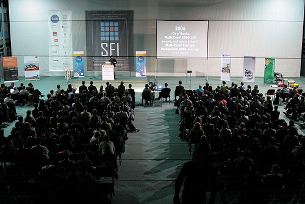

Studencki Festiwal Informatyczny 2008
I had the good fortune to attend the Academic IT Festival over the weekend, in Cracow, Poland. Pictured below is the audience listening to Chad Fowler, Ruby and Rails guru, who I had the pleasure to discover is also a really nice and interesting guy.

The festival is organised by a large group, including former Resolver legends Jan and Konrad, and covers a diverse array of IT and related topics. It is the largest event of its type in Central Europe. Some talks were in English, some in Polish, by an absolutely stellar line-up of luminary speakers, including Joe Armstrong, creator of Erland; Gilad Bracha, co-creator of Java; plus yours truly. See 'one of these things is not like the others.'
There's some photos up here, and I'll publish my own updated Test-Driven Development talk here later today.
Update: There's photos and the talk slides are finally online, over here somewhere...
Comments
Comments powered by Disqus